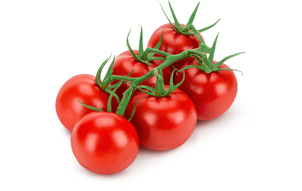

O que você precisa hoje?
Entregamos tudo o que você necessita na porta da sua casa, de hortifruti a itens de limpeza!

Parcerias campeãs em avaliações
| Restaurante | Categoria | Nota | Comentários | |
|---|---|---|---|---|
| 1 | Raízes Brasileiras Bistrô | Brasileira | 10 / 10 ⭐ | "Uma experiência culinária incrível! Os sabores autênticos brilham em cada prato." |
| 2 | Pérolas do Mediterrâneo | Árabe | 10 / 10 ⭐ | "O aroma e o sabor dos pratos no Pérolas do Mediterrâneo são de tirar o fôlego." |
| 3 | Izakaya Sol Nascente | Japonesa | 10 / 10 ⭐ | "A experiência do Izakaya Sol Nascente é como uma viagem ao Japão." |
| 4 | Horta Encantada | Vegetariana | 10 / 10 ⭐ | "A Horta Encantada é um paraíso para os amantes de vegetais!" |
| 5 | Le Bistrot Parisien | Francesa | 10 / 10 ⭐ | "Este restaurante é uma verdadeira joia parisiense. A comida é requintada e autêntica" |
| 6 | Dragão Vermelho | Chinesa | 10 / 10 ⭐ | "Recomendo vivamente o Dragão Vermelho para os amantes de comida chinesa." |
| 7 | Açúcar e Magia Doces Finos | Confeitaria | 10 / 10 ⭐ | "Os doces são verdadeiramente mágicos. Cada mordida é inesquecível." |
| 8 | Paella Valenciana | Espanhola | 10 / 10 ⭐ | "A Paella Valenciana é uma verdadeira embaixada da culinária espanhola." |
| 9 | Taco Loco Cocina Mexicana | Mexicana | 10 / 10 ⭐ | "Os sabores picantes e autênticos do México são os destaques do Taco Loco." |
| 10 | Sabores do Nordeste | Nordestina | 10 / 10 ⭐ | "Uma verdadeira celebração da culinária nordestina." |